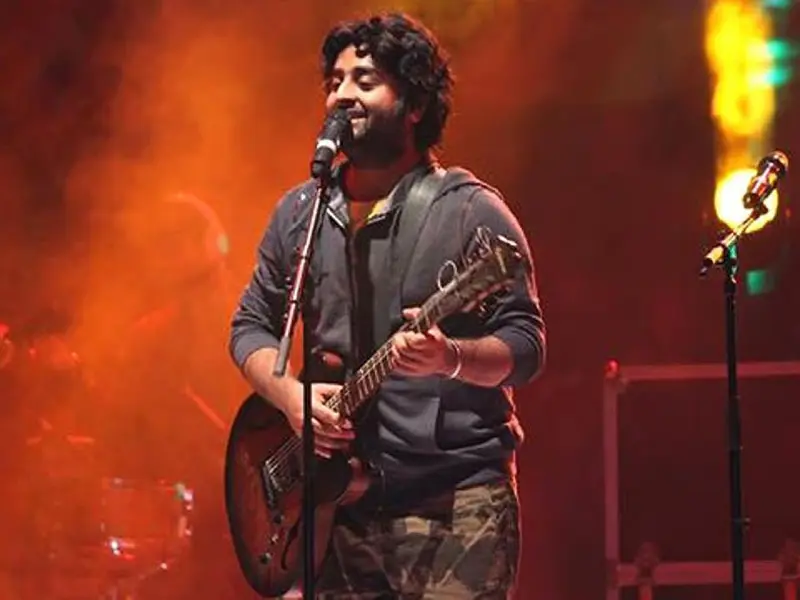

REVATHI SWARALAYA
Indian Classical Music Academy
Indian Classical Music Academy
OUR GURUS
At Revathi Swaralaya, every course is guided by a dedicated guru who brings knowledge, tradition and passion to every lesson.
singer
Dedicated to nurturing students in the art of Carnatic vocal music with a focus on swara, raga, tala and expressive singing.
composer
Guides students through traditional veena techniques while encouraging creativity, discipline and musical expression.

Singer
Helps students build strong foundations in Carnatic violin through structured lessons in swaras, ragas and performance techniques.

Tabla & Tala
Teaches rhythmic patterns, traditional bols and talas while developing precision, timing and confidence.

Carnatic Flute
Introduces students to the soulful world of Indian classical flute through breath control, swaras, ragas and traditional compositions.

Music Theory & Ragas
Helps students understand Indian classical music through ragas, talas, swaras and traditional musical structures.
Learn with guidance, practice with dedication, and let your music grow.
Join Revathi Swaralaya →